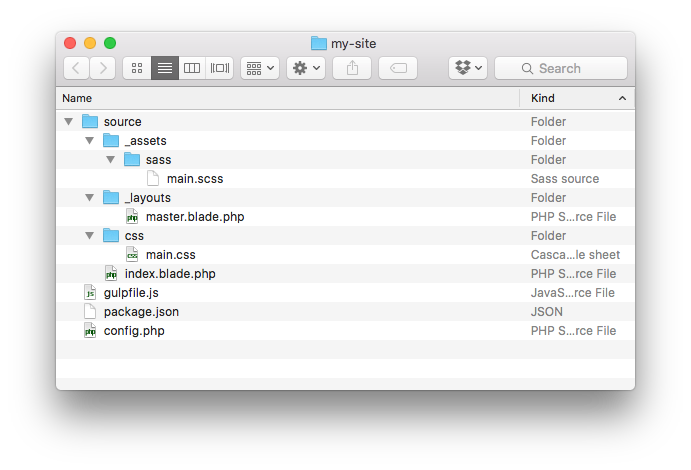

Brought to you by Tighten Co.
The fastest way to start a new Jigsaw site is to use the built-in init command to scaffold the default directory structure.
If you have Jigsaw installed globally, simply run:
$ jigsaw init my-siteThis will scaffold a new Jigsaw site in a new folder called my-site in the current directory.
If you've already created a folder for your site and installed Jigsaw local to that folder with Composer, run:
$ jigsaw initThis will scaffold a new Jigsaw site in the current directory.
By default, Jigsaw gives you the following directory structure:

The source directory contains the actual contents of your site. This is where all of your sites pages, CSS, Javascript, images, etc. will be kept.
At the root of the directory, Jigsaw provides gulpfile.js and package.json for compiling your assets, and a config.php file where you can specify variables to be made available in your templates.
Next, learn about building and previewing your site.